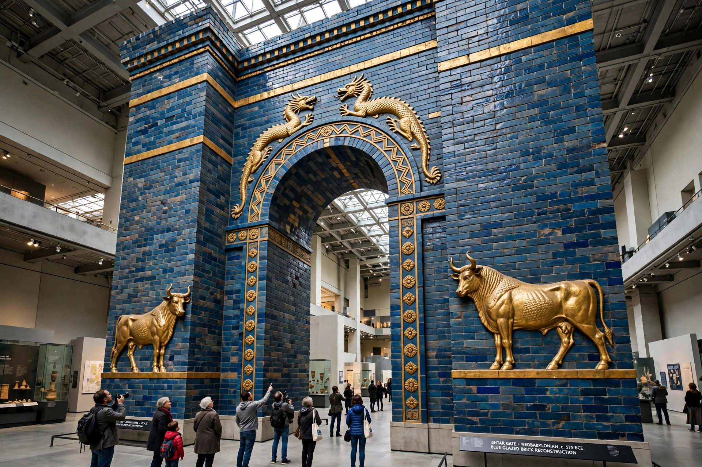

[Image placeholder: The reconstructed Ishtar Gate in the Pergamon Museum, Berlin]The **Ishtar Gate** was the eighth gate of the inner city of Babylon, built under King Nebuchadnezzar II (reigned 605–562 BC) and dedicated to the goddess Ishtar. Constructed of brilliant blue glazed brick with alternating rows of relief dragons (sirrush) and bulls in yellow and white, it formed the ceremonial entrance to the Processional Way used in the New Year (Akitu) festival.
Excavated by Robert Koldewey's German team between 1902 and 1914, the gate's thousands of fragments were shipped to Berlin, where the front of the double gate was reconstructed in the Pergamon Museum (opened 1930) — one of the world's great museum exhibits. The smaller rear gate could not be assembled. A modern replica stands at the entrance to the Babylon site in Iraq, built under Saddam Hussein. The gate exemplifies both the splendour of Neo-Babylonian art and the controversies of colonial-era archaeology and cultural property.
The way led from the gate past the palace and the ziggurat Etemenanki to the temple of Marduk; its walls bore reliefs of lions, Ishtar's animal, in glazed brick. Lions from the way are also displayed in Berlin and other museums.